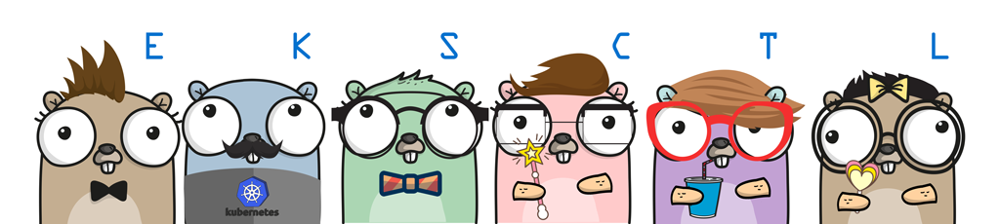

Introduction
Getting started¶
Need help? Join Weave Community Slack.
To list the details about a cluster or all of the clusters, use:
1 | eksctl get cluster [--name=<name>][--region=<region>] |
To create the same kind of basic cluster, but with a different name, run:
1 | eksctl create cluster --name=cluster-1 --nodes=4 |
EKS supports versions 1.12, 1.13, 1.14 (default) and 1.15.
With eksctl you can deploy either version by passing --version.
1 | eksctl create cluster --version=1.14 |
To write cluster credentials to a file other than default, run:
1 | eksctl create cluster --name=cluster-2 --nodes=4 --kubeconfig=./kubeconfig.cluster-2.yaml |
To prevent storing cluster credentials locally, run:
1 | eksctl create cluster --name=cluster-3 --nodes=4 --write-kubeconfig=false |
To let eksctl manage cluster credentials under ~/.kube/eksctl/clusters directory, run:
1 | eksctl create cluster --name=cluster-3 --nodes=4 --auto-kubeconfig |
To obtain cluster credentials at any point in time, run:
1 | eksctl utils write-kubeconfig --cluster=<name> [--kubeconfig=<path>][--set-kubeconfig-context=<bool>] |
To use a 3-5 node Auto Scaling Group, run:
1 | eksctl create cluster --name=cluster-5 --nodes-min=3 --nodes-max=5 |
NOTE: You will still need to install and configure Auto Scaling. See the "Enable Auto Scaling" section below. Also note that depending on your workloads you might need to use a separate nodegroup for each AZ. See Zone-aware Auto Scaling below for more info.
To use 30 c4.xlarge nodes and prevent updating current context in ~/.kube/config, run:
1 | eksctl create cluster --name=cluster-6 --nodes=30 --node-type=c4.xlarge --set-kubeconfig-context=false |
In order to allow SSH access to nodes, eksctl imports ~/.ssh/id_rsa.pub by default, to use a different SSH public key, e.g. my_eks_node_id.pub, run:
1 | eksctl create cluster --ssh-access --ssh-public-key=my_eks_node_id.pub |
To use a pre-existing EC2 key pair in us-east-1 region, you can specify key pair name (which must not resolve to a local file path), e.g. to use my_kubernetes_key run:
1 | eksctl create cluster --ssh-access --ssh-public-key=my_kubernetes_key --region=us-east-1 |
To add custom tags for all resources, use --tags.
NOTE: Until #25 is resolved, tags cannot be applied to EKS cluster itself, but most of other resources (e.g. EC2 nodes).
1 | eksctl create cluster --tags environment=staging --region=us-east-1 |
To configure node root volume, use the --node-volume-size (and optionally --node-volume-type), e.g.:
1 | eksctl create cluster --node-volume-size=50 --node-volume-type=io1 |
NOTE: In
us-east-1you are likely to getUnsupportedAvailabilityZoneException. If you do, copy the suggested zones and pass--zonesflag, e.g.eksctl create cluster --region=us-east-1 --zones=us-east-1a,us-east-1b,us-east-1d. This may occur in other regions, but less likely. You shouldn't need to use--zoneflag otherwise.
You can also create a cluster passing all configuration information in a file
using --config-file:
1 | eksctl create cluster --config-file=<path> |
To create a cluster using a configuration file and skip creating nodegroups until later:
1 | eksctl create cluster --config-file=<path> --without-nodegroup |
To delete a cluster, run:
1 | eksctl delete cluster --name=<name> [--region=<region>] |
NOTE: Cluster info will be cleaned up in kubernetes config file. Please run
kubectl config get-contextsto select right context.
Contributions¶
Code contributions are very welcome. If you are interested in helping make eksctl great then see our contributing guide.
Installation¶
To download the latest release, run:
1 2 | curl --silent --location "https://github.com/weaveworks/eksctl/releases/latest/download/eksctl_$(uname -s)_amd64.tar.gz" | tar xz -C /tmp sudo mv /tmp/eksctl /usr/local/bin |
Alternatively, macOS users can use Homebrew:
1 2 | brew tap weaveworks/tap brew install weaveworks/tap/eksctl |
or MacPorts:
1 | port install eksctl |
and Windows users can use chocolatey:
1 | chocolatey install eksctl |
You will need to have AWS API credentials configured. What works for AWS CLI or any other tools (kops, Terraform etc), should be sufficient. You can use ~/.aws/credentials file
or environment variables. For more information read AWS documentation.
You will also need AWS IAM Authenticator for Kubernetes command (either aws-iam-authenticator or aws eks get-token (available in version 1.16.156 or greater of AWS CLI) in your PATH.
Shell Completion¶
To enable bash completion, run the following, or put it in ~/.bashrc or ~/.profile:
1 | . <(eksctl completion bash) |
Or for zsh, run:
1 2 | mkdir -p ~/.zsh/completion/ eksctl completion zsh > ~/.zsh/completion/_eksctl |
and put the following in ~/.zshrc:
1 | fpath=($fpath ~/.zsh/completion) |
Note if you're not running a distribution like oh-my-zsh you may first have to enable autocompletion:
1 2 | autoload -U compinit compinit |
To make the above persistent, run the first two lines, and put the above in ~/.zshrc.
Feature list¶
The features that are currently implemented are:
- Create, get, list and delete clusters
- Create, drain and delete nodegroups
- Scale a nodegroup
- Update a cluster
- Use custom AMIs
- Configure VPC Networking
- Configure accesss to API endpoints
- Support for GPU nodegroups
- Spot instances and mixed instances
- IAM Management and Add-on Policies
- List cluster Cloudformation stacks
- Install coredns
- Write kubeconfig file for a cluster
